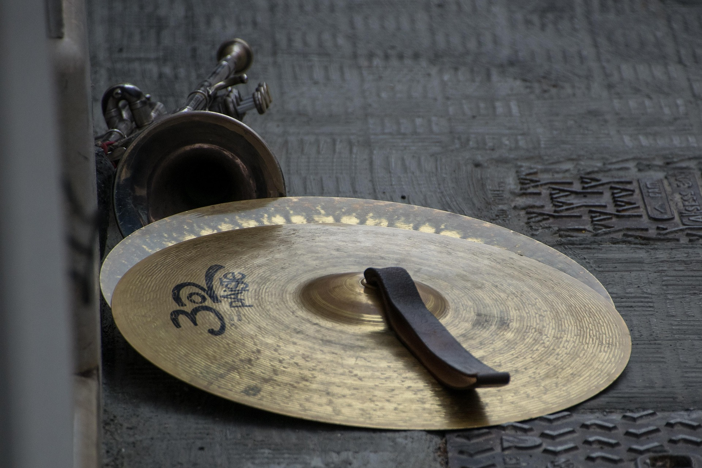

Cymbals
Cymbals are classified as struck idiophones. They make sound by either being hit by a stick or by another cymbal where sound then vibrates off the body of the instrument. Cymbals can be played by hand via a strap or connected to a stand to be played like more traditional percussion.

Classical Applications
Cymbals can be used to create powerful notes that resonate, simple background beats, or even simple shimmering effects. This makes cymbals one of the most versatile percussion instruments as it has many applications.
Famous Piece
Tchaikovsky's Symphony No. 4 in F Minor ends with usage of the cymbals that was new for its time. The cymbal player starts and stops their cymbal at defined intervals to create unique effects.
Fun Fact!
The use of the suspended cymbal originated from jazz and popular music before becoming a prominent member of orchestras.